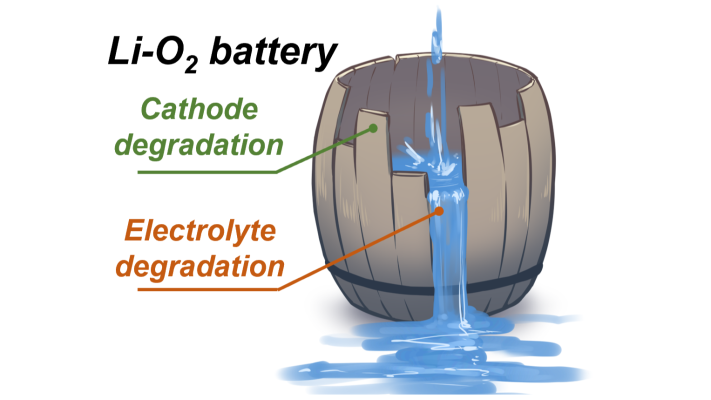
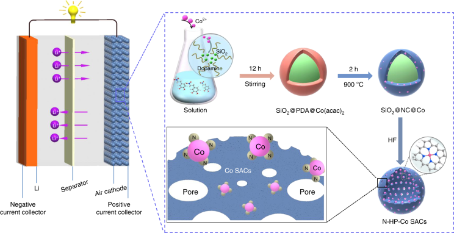
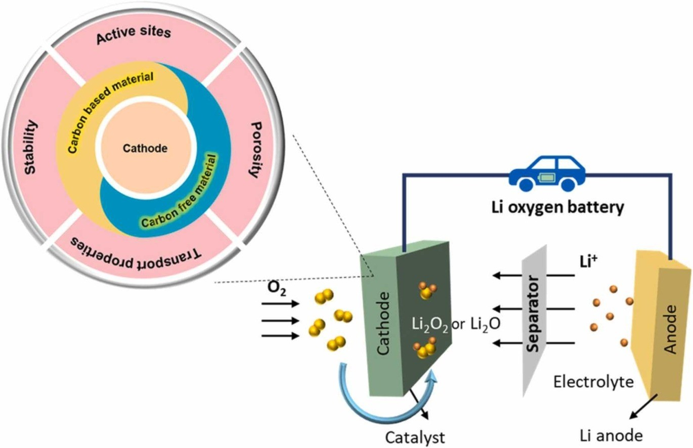

Lithium-oxygen batteries have long captivated researchers with their promise of ultra-high energy density, offering the potential to revolutionize energy storage. However, despite significant advancements in their performance and stability, the actual capacity of these batteries falls far short of their theoretical potential.
This shortfall primarily stems from the inefficient utilization of space within the porous positive electrode, where complex interactions between phase changes, mass transport, and electrochemical reactions occur.
One of the primary challenges in improving lithium-oxygen batteries lies in understanding and characterizing the behavior of lithium peroxide, the key discharge product, within the electrode. Previous research has been hampered by the difficulty of accurately observing these processes within the complex electrode environment.

To gain a deeper understanding of these intricate mechanisms, researchers in this study focused on isolating the impact of lithium peroxide behavior on battery performance. By carefully adjusting the concentration of lithium ions in the electrolyte, they effectively controlled the initial kinetic conditions of the reaction without introducing additional variables like different solvents or catalysts.
Surprisingly, the observed trend in electrochemical performance did not directly correlate with changes in ion conductivity, suggesting that existing theories of lithium peroxide nucleation were insufficient to fully explain the observed behavior.
In electrolytes with low lithium ion concentrations, a high number of lithium peroxide nuclei formed on the electrode surface. These nuclei rapidly grew into a film-like structure, effectively blocking the flow of electrons and leading to a sharp decline in battery voltage.
Conversely, in electrolytes with higher lithium ion concentrations, a lower density of nuclei formed. This allowed for the growth of lithium peroxide in the form of dispersed particles, creating more open spaces within the electrode and maintaining efficient pathways for the flow of oxygen and electrons.

To further investigate the distribution and behavior of lithium peroxide within the electrode, the researchers employed advanced imaging techniques and developed sophisticated computer models. In electrolytes with an optimal lithium ion concentration, they observed an inverse oxygen gradient distribution of lithium peroxide particles. This unique distribution pattern indicated an ideal balance between the rates of nucleation and transport within the electrode, maximizing the overall discharge capacity.
However, in electrolytes with higher lithium ion concentrations, increased viscosity hindered the efficient transport of oxygen within the electrode, leading to a gradual decrease in electrode utilization and ultimately, a reduction in overall battery capacity.
Further analysis revealed that even in the optimal electrolyte concentration, pore blockage within the deeper regions of the positive electrode remained a significant bottleneck limiting overall capacity. To address this, the researchers strategically placed gas channels at different depths within the cathode to facilitate the transport of oxygen.
Remarkably, they observed a significant increase in capacity when the gas channel was located deeper within the electrode, demonstrating that enhancing oxygen transport throughout the entire electrode volume, rather than solely at the surface, is crucial for maximizing battery performance.

This research provides valuable insights into the fundamental mechanisms governing the behavior of lithium-oxygen batteries. By elucidating the intricate interplay between lithium peroxide formation, mass transport, and electrochemical reactions, these findings pave the way for the development of more efficient and higher-capacity lithium-oxygen batteries. Furthermore, the principles and methodologies employed in this study have broader implications for the design and optimization of other metal-air batteries and electrochemical systems involving solid reaction products.
Key Takeaways:
- Lithium-oxygen batteries offer immense potential but face challenges in achieving their theoretical energy density due to limited electrode utilization.
- Lithium peroxide formation and its distribution within the electrode significantly impact battery performance.
- The study highlights the importance of optimizing the balance between nucleation and transport kinetics for maximizing electrode utilization.
- Enhancing oxygen transport throughout the entire electrode volume, rather than solely at the surface, is crucial for improving battery capacity.
- The findings of this research provide valuable insights for the design and optimization of other metal-air batteries and electrochemical systems.